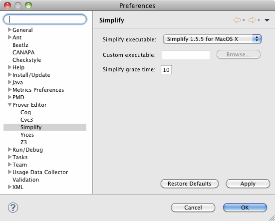
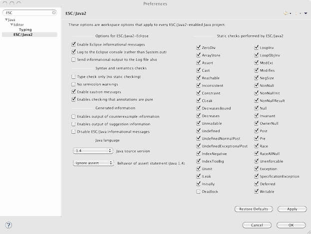

ESC/Java2 Summary
The Extended Static Checker for Java version 2 (ESC/Java2) is a programming tool that attempts to find common run-time errors in JML-annotated Java programs by static analysis of the program code and its formal annotations. Users can control the amount and kinds of checking that ESC/Java2 performs by annotating their programs with specially formatted comments called pragmas.
ESC/Java2 is available in three forms.
- ESC/Java2 is built into the Mobius Program Verification Environment
- ESC/Java2 is a command-line tool with a simple Swing GUI front-end. One can download source and binary versions of this version via our download page.
- ESC/Java2 is also an Eclipse 3.5 plugin, available through the Mobius PVE update site. Development of the plugin is hosted at GitHub.
Installing the ESC/Java2 Eclipse Plug-in
To install the ESC/Java2 Eclipse plug-in, add the aforementioned update site URL to your Eclipse list of update sites, then select the "Extended Static Checking" feature for installation. Eclipse will automatically identify and install all dependent features and plug-ins.
Configuring the ESC/Java2 Eclipse Plug-in
To use the ESC/Java2 plug-in you must configure it and its theorem prover. To configure the latter, open Eclipse's preference panel for the Prover Editor and ensure that the version of Simplify identified for use matches your operating system (see the figure below). If you have any of the other theorem provers installed, ensure their configurations are correct as well.
Next, configure ESC/Java2 via its preference panel, which is located under the "Java" category. In particular, ensure that the "Java source version" is set correctly for your needs. If you use Java assertion statements, it must be set to "1.4". See the figure below. 
Using the ESC/Java2 Eclipse Plug-in
To begin using ESC/Java2 on a project, switch to the Verification Eclipse perspective, select the project with which you would like to use ESC/Java2, and use the ESC/Java2 menu's Setup sub-menu to enable the ESC/Java nature and add a builder for the project. This action will ensure that your project depends upon the jmlspecs project in which you can put your own specs (via an exported source directory, as usual for Eclipse) and that ESC/Java2 is triggered when you edit files in your project. Check your project's builders to see that the ESC/Java2 builder has been added as the last builder.
If you wish to manually trigger ESC/Java2, rather than have it run automatically when changing source or specification files in your project, then disable or remove the builder and then select the resources you wish to check with ESC/Java2 (i.e., one or more files or packages), then either
- use the ESC/Java2->Run ESC/Java2 with Simplify (or similar) menu, or
- use the ESC/Java2 button that looks like a small green check mark over a document.
You can also enable and disable automatic checking of particular files and packages using the Enable/Disable Auto ESC/Java2 Checking menus or buttons.
Finally, clearing all ESC/Java2 markers is accomplished using a similar menu item or button. Remember that problems can be sorted by type in the Eclipse Problems view. This functionality is quite handy when running multiple static checkers.
Feedback
GitHub hosts development of ESC/Java2.
There is one mailing lists that focuses on ESC/Java2:
- The JMLSpecs-ESCJava mailing list is the "users" mailing list where one can ask questions of experienced users and the developers of ESC/Java2. Subscribe to this list by registering at SourceForge.
A translation of this document into Belorussian is available as well.